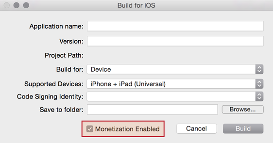

Type Library Revision Release 2024.3703 Keywords ads, advertising, monetization, fuse Platforms Android, iOS
Fuse is the only monetization platform that lets you give each of your users a great experience, optimize monetization across
For more information please visit www.fusepowered.com/corona.
A Fuse account will be created for you automatically when you perform your first app build via Corona SDK build 2015.XXXX or later. Following that, you will receive an email from Fuse Powered with account information and instructions for logging into the Fuse dashboard. These credentials will be different from those associated with Corona SDK and coronalabs.com.
If you have any issues accessing your Fuse account, please contact [INSERT_SUPPORT_INFO].
If you happen to already have an existing Fuse account, then you will not be able to do device builds until your Fuse and Corona accounts are linked. Please contact [INSERT_SUPPORT_INFO] so we can manually link your accounts.
If you are using Corona SDK build 2015.XXXX or later, the Fuse plugin will be automatically integrated into your app. Please proceed to the function and event documentation below to learn how to fully implement Fuse Powered functionality.
local fuse = require( "plugin.fuse" )
Events
When the Corona Simulator does a device build, the build server automatically provisions a unique app key based on the app’s unique identifier (e.g. bundle identifier on iOS).
NOTE: App keys are issued on a per-platform basis. If you deploy your app on multiple platforms, the app uses a different app key for each platform.
For daily builds 2015.2618 and newer, the device build process in the Corona Simulator is seamlessly integrated with Fuse.
During the soft launch period, these features are temporarily hidden. You must activate them explicitly:
defaults write com.coronalabs.Corona_Simulator debugMonetizationPlugin 1HKEY_CURRENT_USER\Software\Ansca Corona\Corona Simulator\Preferences setting and add a DWORD value with name debugMonetizationPlugin and value 1:[][images.simulator.win-fuse-preference]
To take full advantage of Fuse Powered functionality, ensure that monetization is enabled in the device build dialog:

If you are using a build older than 2015.2618, you must modify the plugins table of build.settings. This ensures that the build server will integrate the plugin during the build phase.
settings =
{
plugins =
{
["plugin.fuse"] =
{
publisherId = "com.coronalabs"
},
["plugin.fuse.ads"] =
{
publisherId = "com.coronalabs"
},
},
}
If you’re using Corona Enterprise for iOS, ensure that the following static libraries are linked:
libplugin_fuse.alibFuseAds.a